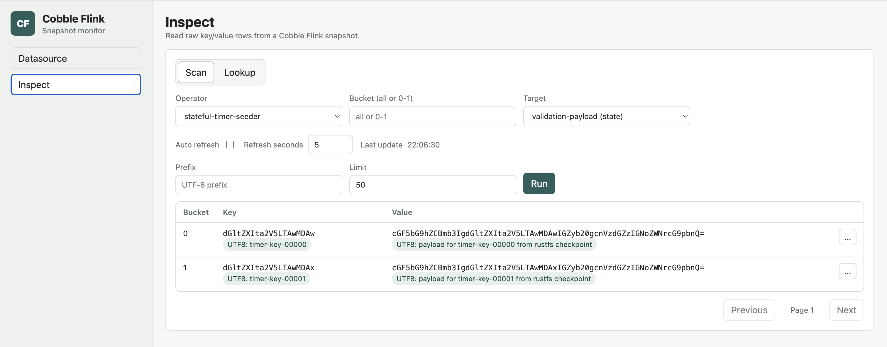

Web Monitor
Use the Cobble Flink web monitor when you want to inspect Cobble data that was produced by a Flink checkpoint or by a Cobble sink.
The monitor is read-only. It starts a small Java HTTP server, opens a browser UI, and lets you choose a datasource, snapshot, and inspect mode without writing a separate Flink job.
When To Use It
The web monitor is useful when you want to answer questions such as:
- whether a checkpoint contains Cobble state for a specific operator
- what state names are available inside a checkpoint
- whether a sink path has committed snapshots
- what keys and values are present in a selected bucket or prefix
- whether a small set of keys keeps changing as newer snapshots appear
It is intended for inspection and debugging. For normal production reads, use the Cobble source connector or your own application code.
Build and Run
Build the web monitor from the repository:
./mvnw -pl cobble-flink-monitor -am package -DskipTests
Start it with no initial datasource:
java -jar cobble-flink-monitor/target/cobble-flink-monitor-*.jar
Then open the UI and choose a path from the Datasource page.
You can also provide an initial path:
java -jar cobble-flink-monitor/target/cobble-flink-monitor-*.jar \
--checkpoint file:///path/to/checkpoints-or-cobble-table
The --checkpoint option accepts either a Flink checkpoint root or a normal Cobble datasource path. For a Flink checkpoint, you can point to the checkpoint root or directly to a concrete chk-* directory:
java -jar cobble-flink-monitor/target/cobble-flink-monitor-*.jar \
--checkpoint file:///path/to/checkpoints/chk-42
Useful options:
--bind 127.0.0.1
--port 8088
--checkpoint file:///path/to/checkpoints-or-cobble-table
--flink-conf /path/to/flink/conf
--total-buckets 32768
--inspect-default-limit 100
--inspect-max-limit 1000
Remote Storage
If the datasource is on a remote filesystem, pass --flink-conf so the monitor can load the same filesystem configuration used by Flink:
java -jar cobble-flink-monitor/target/cobble-flink-monitor-*.jar \
--flink-conf "$FLINK_HOME/conf" \
--checkpoint s3://bucket/path/to/checkpoints
This is the recommended way to inspect paths on S3-compatible storage, OSS, Azure, GCS, HDFS, or other Flink-supported filesystems. The web monitor initializes Flink filesystems before opening the datasource and passes the relevant storage options to Cobble when reading remote volumes.
For S3-compatible storage, the Flink configuration usually includes settings such as:
s3.endpoint: https://s3.example.com
s3.access-key: your-access-key
s3.secret-key: your-secret-key
s3.path.style.access: true
s3.region: us-east-1
Datasource Selection
The Datasource page lists snapshots available under the current path.
For a Flink checkpoint root, the monitor scans checkpoint directories such as chk-42, discovers Cobble operators, and lets you choose:
latest, which follows the newest checkpoint after refresh- a concrete checkpoint
- an operator, on the
Inspectpage
For a normal Cobble datasource such as a sink path, the monitor scans snapshot/SNAPSHOT-* and lets you choose:
latest, which follows the newest Cobble snapshot after refresh- a concrete snapshot
Operator selection is only shown for checkpoint datasources. Sink and ordinary Cobble datasource paths expose a single sink inspect target.

Inspect Data
The Inspect page has two modes.
Scan Mode
Use scan mode when you want to browse keys in one bucket or across all buckets. You can set:
- bucket, or
all - key prefix
- row limit
- columns, for sink datasources
State data exposes state names directly. It does not expose column families in the UI. Sink data exposes columns because sink rows are stored as multi-column records.
When bytes can be decoded as UTF-8, the UI shows a UTF8: label next to the base64 representation. If bytes are not valid UTF-8, only the base64 value is shown.

Lookup Mode
Use lookup mode when you want to keep watching specific keys. From scan results, choose Track in lookup from a row action menu. The lookup view can track multiple entries and refresh them together.
Lookup mode is useful when the datasource is latest and you want to compare the same keys across newer snapshots.
Notes
- The monitor is read-only.
latestis resolved from the current datasource list and can be refreshed.- Checkpoint datasources support operator discovery.
- Sink datasources support column projection.